QuickieFix · User Manual
| Version | 2.0 |
| Date | 15 July 2026 |
| Audience | Customers & tenants |
| App | my.quickiefix.app · Android app |
QuickieFix is New Zealand's on-demand marketplace for home repairs. When something breaks, you request help and we dispatch a verified tradie to you in real time — like calling a ride, but for a plumber, electrician or locksmith.
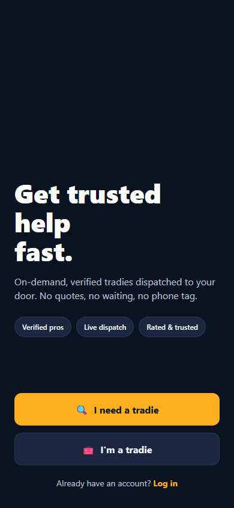
Get trusted help in minutes — verified tradies, dispatched on demand.What it costs
| Item | Who pays | How |
|---|---|---|
| Using QuickieFix | Nobody — it's free for customers | No booking fees, no subscriptions |
| Labour (hourly rate + call-out fee) | You, directly to the tradie | The rate is shown before you commit and locked in when the tradie accepts |
| Parts & materials | You, directly to the tradie | Extra — agreed with you on site, itemised on your job summary |
That distinction matters: the price you see upfront is the labour rate (hourly rate plus any call-out fee). Any parts or materials the job needs are additional, and your tradie must agree them with you on site before they're used.
💡 QuickieFix is built for help now. There's no scheduling calendar to wrestle with — you request, we dispatch the nearest available verified pro.
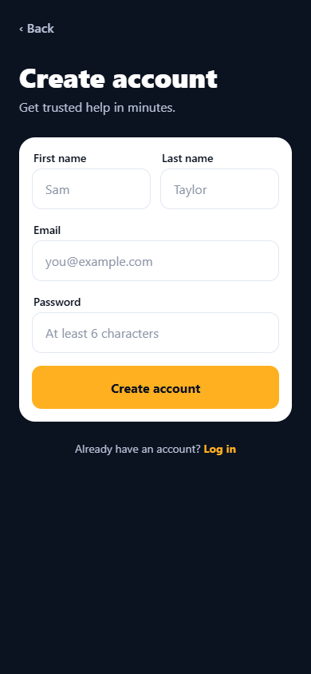
Four fields and you're in — no payment details required.💡 Are you a tradie? Use Join as a tradie instead — tradie accounts go through verification and have their own app experience.
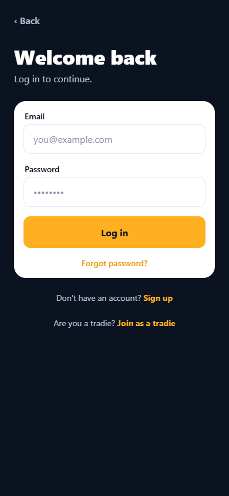
Welcome back — log in to continue.💡 Once you're logged in, you can enable fingerprint/face unlock under Sign-in & security in your Account tab so you never type the password again.
The home screen is mission control: everything starts here.
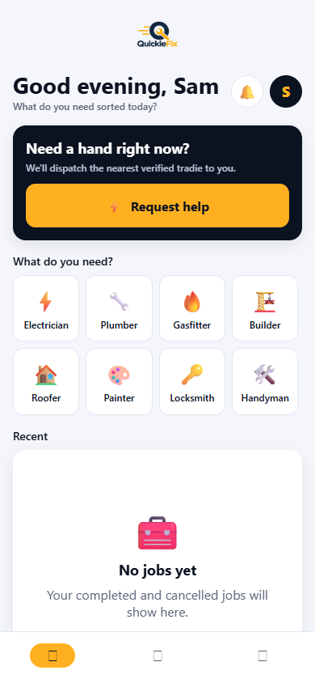
Greeting, live tradie availability, the Request help button, trade shortcuts and your recent jobs.From top to bottom you'll see:
| Element | What it does |
|---|---|
| Greeting | "Good morning, Sam" plus What do you need sorted today? |
| Bell & avatar | The bell opens Activity (with a badge counting active jobs); the avatar opens your Account |
| Request in progress banner | If you have a live request, it's pinned at the top with Continue and Cancel buttons |
| Live supply pill | A green pill reading "N verified tradies near you now" — real availability, right now |
| Supply line | e.g. Nearest verified pro ~12 min away · call-out from $59 — anchored to your saved home address |
| Request help | The big amber button. When we know the nearest pro's ETA it reads Request help · ~12 min |
| What do you need? | A grid of trade tiles — tap one to start a request with that trade pre-selected. QuickieFix covers 12 trades (full list below) |
| Recent | Your last few completed or cancelled jobs — tap any to reopen its summary |
The 12 QuickieFix trades
| Trade | Trade | ||
|---|---|---|---|
| ⚡ Electrician | 🔧 Plumber | 🔥 Gasfitter | 🏗️ Builder |
| 🏠 Roofer | 🎨 Painter | 🔑 Locksmith | 🛠️ Handyman |
| 🔌 Appliance Repair | 🌿 Landscaper | 🧽 Cleaner | 🐜 Pest Control |
💡 Save your home address in Account — the live supply pill and ETA on the home screen are anchored to it, so the numbers you see reflect your actual street, not a city-wide average.
Tap Request help (or a trade tile) and the app walks you through four quick steps: Service → Details → Location → Review. A progress bar at the top shows where you are, and the back chevron always takes you one step back.
Choose one of the 12 trades. If you started from a trade tile on the home screen, this step is already done and you land straight on Details.
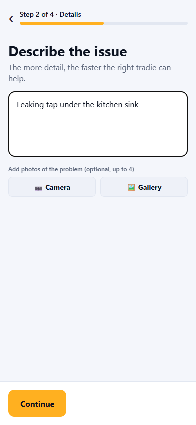
A clear description and a photo or two get you the right tradie faster.💡 A picture of the problem beats a paragraph. Tradies use your photos to bring the right gear on the first visit.
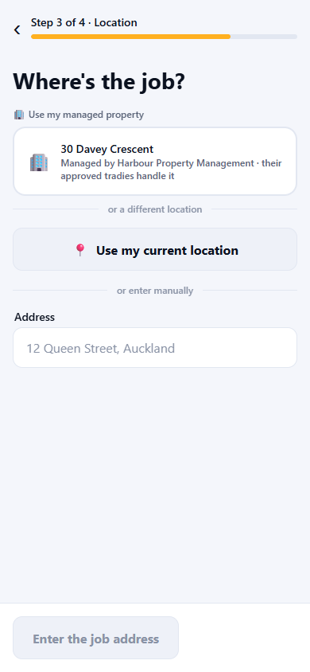
Saved properties, your current location, or a typed address — your choice.You have three ways to set the location:
When the address is pinned to exact coordinates you'll see ✓ Location pinned — tradies see exact distance.
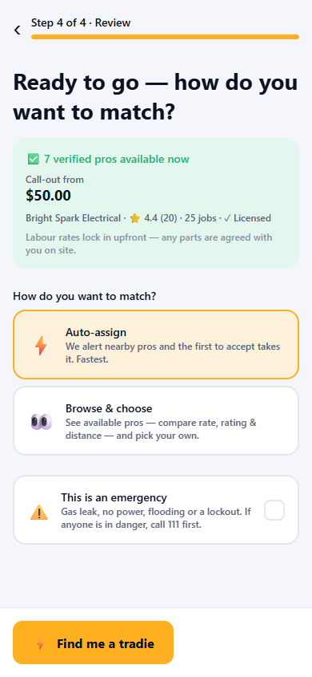
Live proof before you commit: who's available, how far, and the from-price.Before you submit, the app shows a live availability preview for your trade at your address:
Under the preview: Labour rates lock in upfront — any parts are agreed with you on site.
How do you want to match?
| Option | What happens |
|---|---|
| ⚡ Auto-assign | We alert nearby pros and the first to accept takes the job. Fastest. |
| 👀 Browse & choose | You see the available pros — compare rate, rating and distance — and pick your own. |
This is an emergency — tick this for a gas leak, no power, flooding or a lockout. Emergency jobs jump the search queue and are always auto-assigned for speed (Browse & choose is disabled).
⚠️ QuickieFix is not an emergency service. If there's a fire, a smell of gas, risk of electrocution, or any danger to life — call 111 first. When you tick the emergency box, the app shows a Call 111 now button for exactly this reason.
Tap Find me a tradie (or Browse tradies) and you're off.
💡 Changed your mind mid-request? Backing out of a partly-filled request asks you to confirm before discarding, so a stray tap won't lose your photos and description.
If you rent through a property management agency, QuickieFix can route repairs at your place through your property manager — often at no cost to you.
QF-AG-7K2P).💡 Confirmed but your address hasn't appeared? The app tells you: ask your property manager to add you to your property so repairs there are one tap away.
Pick your managed property in the location step, and at the Review step you'll be asked Who's paying for this job?
 At a managed property, you choose who pays — the agency (default) or yourself.
At a managed property, you choose who pays — the agency (default) or yourself.
| Choice | What it means |
|---|---|
| 🏢 My property manager pays (default) | The request goes only to the agency's approved tradies. Costs are covered by their agreement — you see no rates and pay nothing. The billing contact is locked to the agency (shown read-only with a 🔒 — it can't be changed). |
| 👤 I'll pay myself | A normal open-market job: choose from all available tradies, labour rates shown upfront, and you pay the tradie directly. |
When the agency pays, the review screen shows how many of their approved tradies are available right now. If none are online, your request still goes out — they're notified the moment they're back.
After you submit an auto-assigned request, you land on the searching screen.
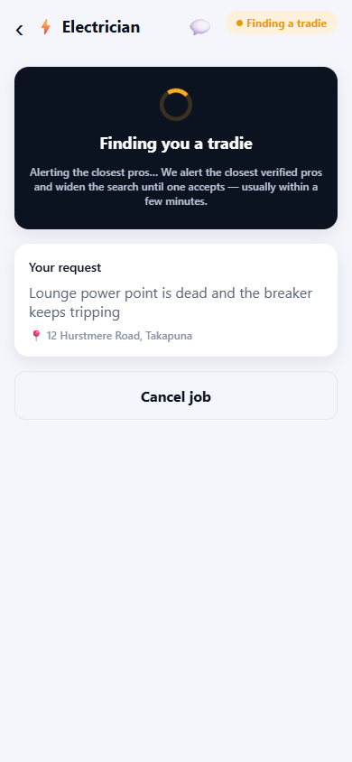
We alert the closest verified pros and widen the search until one accepts.If no tradie is found
Occasionally nobody is free. The screen tells you honestly which case you're in:
Once a tradie takes your job, the tracking screen walks you through every stage.
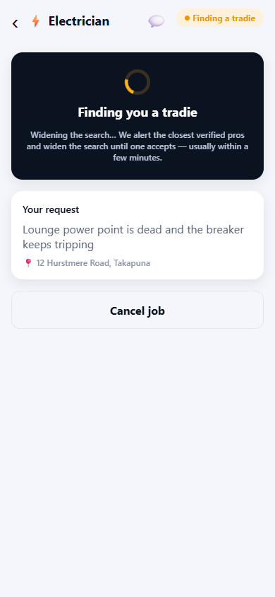
Confirmed — your tradie's labour rates are locked in and shown upfront.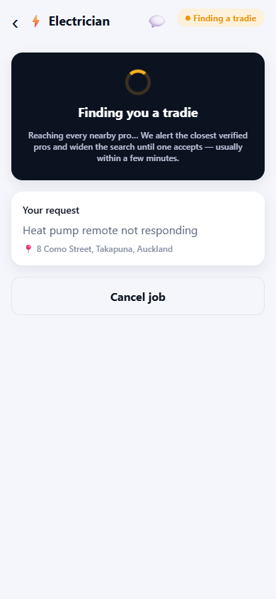
Watch your tradie's live position move toward you on the map.When the tradie arrives you'll see 🛠️ Your tradie is on site and working on the job.
Throughout, the screen also shows a Progress timeline, your original request (description, address and photos), and a Cancel job button — available up until the tradie is on site. Cancelling notifies the tradie.
💡 The 💬 icon in the header opens Messages at any stage — see the next section.
Every job has its own message thread with your tradie — tap the 💬 icon on the tracking screen.
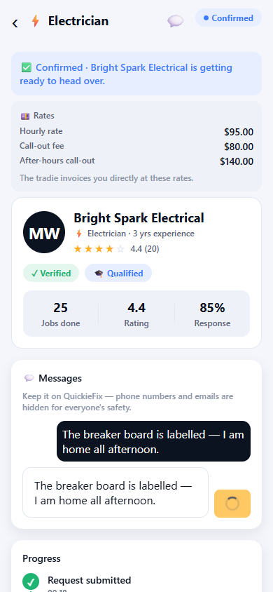
Chat with your tradie in-app — with the job details and photos right there for context.⚠️ Never arrange payment through chat or move the conversation off-platform. Your upfront rates, completion code and complaint process only protect jobs that stay on QuickieFix.
When your tradie marks the job done, the tracking screen turns celebratory.
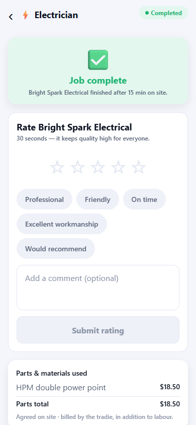
Job complete — with time on site, parts itemised and your confirmation code.Rate your tradie — 30 seconds
Right under the green Job complete hero is the rating form. Pick a star rating and tap any tags that fit — Professional, Friendly, On time, Excellent workmanship, Would recommend — then submit. It takes 30 seconds and keeps quality high for everyone.
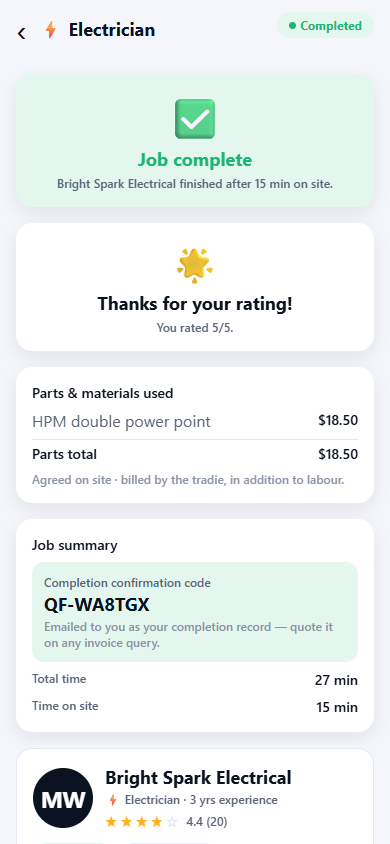
Thanks for your rating — it's how the best tradies rise to the top.Parts & materials used
If the job used parts, they're itemised with quantities, per-item prices and a Parts total. Remember: parts are agreed on site · billed by the tradie, in addition to labour — nothing should appear here that wasn't discussed with you.
Job summary and completion code
The summary card shows Total time and Time on site, plus your Completion confirmation code — a short code that is emailed to you as your completion record. Quote it on any invoice query with the tradie or with QuickieFix support.
Something wrong?
Tap Report a problem at the bottom, enter a subject (e.g. "Tradie didn't finish the job") and any detail, and submit. Our team reviews every complaint and will be in touch.
The Activity tab is your full job history — every job you've ever requested, newest first, each with its trade, address and current status (searching, confirmed, travelling, on site, completed, cancelled).
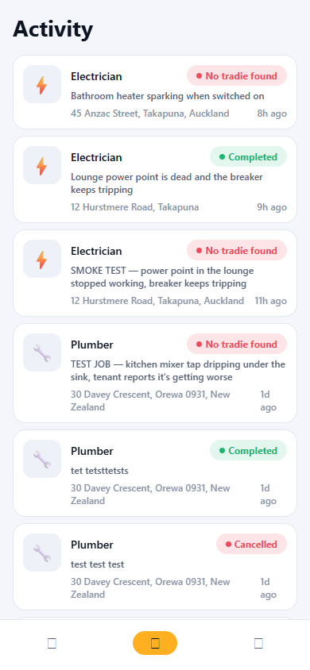
Every job, every status — tap any card to reopen its tracking screen or summary.Tap any job card to reopen it: active jobs open live tracking; finished jobs open the summary with rates, parts, times and your completion code.
💡 The bell icon on the home screen is a shortcut straight here, with a badge showing how many jobs are currently active.
The Account tab holds your profile, addresses, properties and support tools.
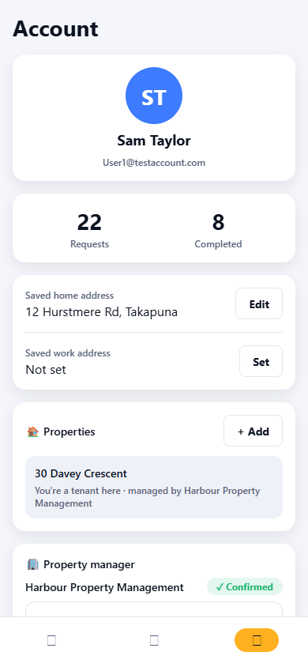
Profile, saved addresses, properties, property manager link, support and security.Save a home and work address. Tap Set (or Edit) next to either, start typing, pick from the NZ address suggestions and save. Your home address powers the live availability and ETA on the home screen; both addresses speed up the location step. Clearing the field and saving removes an address.
Own a rental? Tap + Add in the 🏠 Properties card, give it an optional label (e.g. Unit 4, Takapuna) and the address, and tap Add property. Then, for each property:
The 🏢 Property manager card is where you link an agency with your agent code — see section 5 for the full flow and what it unlocks.
Tap Contact QuickieFix in the 🛟 Help & support card, enter a subject and message, and send. Your ticket goes straight to the QuickieFix team's back office and ops inbox — we reply in-app or by email.
Enable biometric unlock (fingerprint/face) so you can open the app without typing your password.
At the bottom of the tab, Delete my account permanently removes your profile, addresses and sign-in.
⚠️ Deletion is permanent and cannot be undone. Completed-job records are kept in de-identified form (no longer linked to you) as required by billing law. Log out first if you just want to switch accounts.
How much does QuickieFix cost me? Nothing. QuickieFix is completely free for customers — no booking fees, no subscriptions. You pay the tradie directly for the work.
What exactly am I paying the tradie? Labour, at the rates shown upfront: an hourly rate plus any call-out fee (a higher after-hours call-out may apply outside normal hours). These rates are visible before you commit and locked in when the tradie accepts — they appear on your Confirmed screen and in your job summary.
What about parts and materials? Parts are extra and must be agreed with you on site before they're used. They're itemised, with a total, on your completed-job screen, and billed by the tradie in addition to labour.
How are tradies verified? Every tradie on QuickieFix is verified before they can take jobs. For regulated trades (electricians, plumbers, gasfitters, builders) that includes checking the required licences and qualifications — you'll see a ✓ Licensed tick and their rating, completed-job count and qualifications on their profile card.
Can I pick my own tradie? Yes — choose Browse & choose at the review step to compare available pros by rate, rating and distance. Emergencies are always auto-assigned for speed.
Can I cancel? Yes, free of charge, any time while we're searching — and up until the tradie is on site (they'll be notified).
What if I have a problem after the job? Use Report a problem on the completed-job screen, and quote your completion confirmation code (emailed to you) on any invoice query. For anything else, raise a ticket via Help & support in your Account.
Where is QuickieFix available? We're launching on Auckland's North Shore first, with more of New Zealand to follow. The live supply pill on your home screen always tells you exactly how many verified tradies are near you right now.
💡 The fastest way to a great result: clear description, a couple of photos, a pinned address — and 30 seconds to rate your tradie when it's done.